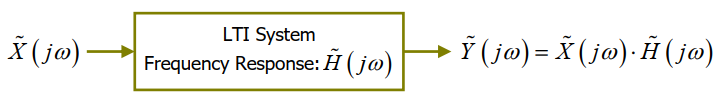
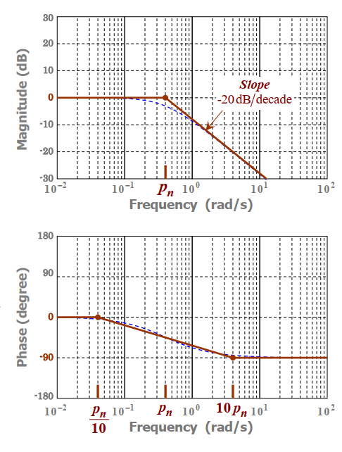

信号与系统学习笔记#6
LTI 系统
连续时间线性时不变（LTI）系统中有重要的一类，可用线性常系数微分方程表示：
\[
\sum_{n=0}^{N}a_n\frac{\mathrm{d}^ny(t)}{\mathrm{d}t^n}=\sum_{m=0}^{M}b_m\frac{\mathrm{d}^mx(t)}{\mathrm{d}t^m}
\]
其中，\(x(t)\)和\(y(t)\)分别为输入和输出，\(a_n\)和\(b_m\)是实常数，并且\(a_N\neq 0\)。\(N\)是\(y(t)\)的 highest derivative，也被称为该系统的阶（order）。
冲激响应（Impulse Response）
一个连续时间 LTI 系统的冲激响应，\(h(t)\)，被定义为当输入为 unit impulse 时系统的响应：
\[
h(t) = \mathrm{T}[\delta (t)]
\]
假设输入为一个任意的信号\(x(t)\)，根据\(\delta (t)\)的 replication property 以及 LTI 系统的性质，可得：
\[
y(t) = x(t) * h(t)
\]

不难看出，一个连续时间 LTI 系统可由它的冲激响应完全表征，其输出\(y(t)\)即为输入\(x(t)\)与冲激响应\(h(t)\)的卷积。
频率响应（Frequency Response）
对上述等式进行傅里叶变换，可以得到 LTI 系统在频域中输入和输出的关系：
\[
Y(f) = \Im \{x(t) * h(t)\} = X(f)\cdot H(f)
\]
其中：
\[
H(f) = \Im \{h(t)\} = \left| H(f) \right|\exp(j\angle H(f))
\]
\(H(f)\)被称为频率响应，\(\left| H(f) \right|\)和\(\angle H(f)\)分别是幅度响应（magnitude response）和相位响应（phase response）。
傅里叶变换在 ω-domain 的表达
在研究系统时，频率函数经常被表示为\(j\omega\)的函数（\(\omega = 2\pi f\)）。
\[
\mbox{f-domain: }\quad \Phi (f) = \Im \{\phi (t)\} \\
\mbox{ω-domain: }\quad \tilde{\Phi} (j\omega) = \Phi (f)|_{f=\omega / (2\pi)} = \Phi (\frac{\omega}{2\pi})
\]
根据前文的结论，可得：
\[
\tilde{Y}(j\omega) = \tilde{X}(j\omega)\cdot \tilde{H}(j\omega)
\]

\[
\tilde{H}(j\omega) = \left|\tilde{H}(j\omega)\right|\exp(j\angle (j\omega))
\]
伯德图（Bode Diagram）
伯德图可用于描述一个 LTI 系统的频率响应，\(\tilde{H}(j\omega)\)。
伯德图包含两个图：
- 幅度图（magnitude plot）：\(\left|\tilde{H}(j\omega)\right|_{\mbox{dB}} = 20\log_{10}\left|\tilde{H}(j\omega)\right|\ \mbox{dB}\)
- 相位图（phase plot）：\(\angle\tilde{H}(j\omega)\ \mbox{in degrees}\)
这两张图通常被绘制在半对数图上（横轴为对数尺度）。
伯德图仅对正频率进行可视化。伯德图可用数条直线近似表示，这样的结果被称为直线伯德图。
传递函数
对本文开头的线性常系数微分方程进行傅里叶变换并进行变量代换可得频率响应：
\[
\tilde{H}(j\omega) = \frac{\tilde{Y}(j\omega)}{\tilde{X}(j\omega)} = \sum_{m=0}^{M} b_m(j\omega)^m / \sum_{n=0}^{N} a_n(j\omega)^n
\]
令\(\omega = s/j\)，那么：
\[
\tilde{H}(s) = K’\frac{(s+z_1)(s+z_2)\dots(s+z_M)}{(s+p_1)(s+p_2)\dots(s+p_N)}\ \mbox{where}\ K’ = \frac{b_0}{a_0}\frac{p_1 p_2\dots p_N}{z_1 z_2\dots z_M}
\]
有时也可这样表示：
\[
\tilde{H}(s) = \frac{b_0}{a_0}\frac{(s/z_1 + 1)(s/z_2 + 1)\dots (s/z_M + 1)}{(s/p_1 + 1)(s/p_2 + 1)\dots (s/p_N + 1)}
\]
实际上，对本文开头的线性常系数微分方程进行拉普拉斯变换可以得到相同的结果。并且等式中\(\tilde{X}(s)\)和\(\tilde{Y}(s)\)分别是\(x(t)\)和\(y(t)\)的拉普拉斯变换。
- \(\tilde{H}(d) = \frac{\tilde{Y}(s)}{\tilde{X}(s)}\)即为 LTI 系统的传递函数（transfer function）。
- \((-z_m)\)被称为 zeros。
- \((-p_n)\)被称为 poles。
- \((N-M)\)被称为 pole excess。
构建直线伯德图
一个系统的 DC gain 指的是系统在频率为零时的响应。所以 DC gain 就等于\(\tilde{H}(0)\)。
对于直线伯德图的构建由传递函数开始。首先将传递函数分成三个情况：
Nth-order System with \(l\) differentiators
\[
\tilde{H}(s) = K_{\mathrm{d}} s^l \cdot \frac{(s/z_1 + 1)(s/z_2 + 1)\dots (s/z_{M-l} + 1)}{(s/p_1 + 1)(s/p_2 + 1)\dots (s/p_N + 1)};\quad \left\{\begin{split}&z_m \neq 0 \ &\forall m \in [1, M-l]\newline &p_n \neq 0 \ &\forall n \in [1, N]\end{split}\right.
\]在这种情况下，该系统的 DC gain 为\(\tilde{H}(0) = 0\)。
Nth-order System with \(l\) integrators
\[
\tilde{H}(s) = \frac{K_{\mathrm{i}}}{s^l} \cdot \frac{(s/z_1 + 1)(s/z_2 + 1)\dots (s/z_{M} + 1)}{(s/p_1 + 1)(s/p_2 + 1)\dots (s/p_{N-l} + 1)};\quad \left\{\begin{split}&z_m \neq 0 \ &\forall m \in [1, M]\newline &p_n \neq 0 \ &\forall n \in [1, N-l]\end{split}\right.
\]在这种情况下，该系统的 DC gain 为\(\tilde{H}(0) = \infty\)。
Nth-order System without integrator or differentiator
\[
\tilde{H}(s) = K_{\mathrm{dc}} \cdot \frac{(s/z_1 + 1)(s/z_2 + 1)\dots (s/z_{M} + 1)}{(s/p_1 + 1)(s/p_2 + 1)\dots (s/p_N + 1)};\quad \left\{\begin{split}&z_m \neq 0 \ &\forall m \in [1, M]\newline &p_n \neq 0 \ &\forall n \in [1, N]\end{split}\right.
\]其中\(K_{\mathrm{dc}} = \tilde{H}(0)\)即为系统的 DC gain。
下面讨论几个基本系统的直线伯德图的构建。
Bode plots of a DC Gain:
\[
\begin{split}
&\tilde{H}(s) = K_{\mathrm{dc}}
\newline
&\mbox{Frequency Response: }\quad &\tilde{H}(j\omega) = K_{\mathrm{dc}}
\newline
&\mbox{Magnitude Response: }\quad &\left\{\begin{split}&\left|\tilde{H}(j\omega)\right| = K_{\mathrm{dc}}\newline &\left|\tilde{H}(j\omega)\right|_{\mbox{dB}} = 20\log_{10}(K_{\mathrm{dc}})\ \mbox{dB}\end{split}\right.
\newline
&\mbox{Phase Response: }\quad &\angle\tilde{H}(j\omega) = 0^{\circ}
\end{split}
\]Bode plots of Differentiator:
\[
\begin{split}
&\tilde{H}(s) = K_{\mathrm{d}} s
\newline
&\mbox{Frequency Response: }\quad &\tilde{H}(j\omega) = jK_{\mathrm{d}}\omega
\newline
&\mbox{Magnitude Response: }\quad &\left\{\begin{split}&\left|\tilde{H}(j\omega)\right| = K_{\mathrm{d}}\omega \newline &\left|\tilde{H}(j\omega)\right|_{\mbox{dB}} = 20\log_{10}(K_{\mathrm{d}}) + 20\log_{10}(\omega)\ \mbox{dB}\end{split}\right.
\newline
&\mbox{Phase Response: }\quad &\angle\tilde{H}(j\omega) = 90^{\circ}
\end{split}
\]Bode plots of Integrator:
\[
\begin{split}
&\tilde{H}(s) = \frac{K_{\mathrm{i}}}{s}
\newline
&\mbox{Frequency Response: }\quad &\tilde{H}(j\omega) = \frac{K_{\mathrm{i}}}{j\omega}
\newline
&\mbox{Magnitude Response: }\quad &\left\{\begin{split}&\left|\tilde{H}(j\omega)\right| = \frac{K_{\mathrm{i}}}{\omega} \newline &\left|\tilde{H}(j\omega)\right|_{\mbox{dB}} = 20\log_{10}(K_{\mathrm{i}}) - 20\log_{10}(\omega)\ \mbox{dB}\end{split} \right.
\newline
&\mbox{Phase Response: }\quad &\angle\tilde{H}(j\omega) = -90^{\circ}
\end{split}
\]Bode plots of zero factor:
\[
\begin{split}
&\tilde{H}(s) = \frac{s}{z_m} + 1
\newline
&\mbox{Frequency Response: }\quad &\tilde{H}(j\omega) = j\frac{\omega}{z_m} + 1
\newline
&\mbox{Magnitude Response: }\quad &\left\{\begin{split}&\left|\tilde{H}(j\omega)\right| = \sqrt{\omega^2 / z_m^2 + 1} \newline &\left|\tilde{H}(j\omega)\right|_{\mbox{dB}} = 20\log_{10}\left(\sqrt{\omega^2 / z_m^2 + 1}\right) \ \mbox{dB}\newline &\omega << z_m \quad \left|\tilde{H}(j\omega)\right|_{\mbox{dB}} \rightarrow 0 \newline &\omega >> z_m \quad \left|\tilde{H}(j\omega)\right|_{\mbox{dB}} \rightarrow 20\log_{10}\left(\frac{\omega}{z_m}\right)\end{split}\right.
\newline
&\mbox{3dB Corner Frequency: }\quad &\omega = z_m\ \mbox{rad/s}
\newline
&\mbox{LO-Frequency Phase: }\quad &\lim_{\omega \rightarrow 0}\tan^{-1}\left(\frac{\omega}{z_m}\right) = 0^{\circ}
\newline
&\mbox{HI-Frequency Phase: }\quad &\lim_{\omega \rightarrow \infty}\tan^{-1}\left(\frac{\omega}{z_m}\right) = 90^{\circ}
\end{split}
\]Bode plots of pole factor:
\[
\begin{split}
&\tilde{H}(s) = \left( \frac{s}{p_n} + 1 \right)^{-1}
\newline
&\mbox{Frequency Response: }\quad &\tilde{H}(j\omega) = \left(j\frac{\omega}{p_n} + 1\right)^{-1} = \frac{1}{j\omega / p_n + 1}
\newline
&\mbox{Magnitude Response: }\quad &\left\{\begin{split}&\left|\tilde{H}(j\omega)\right| = \frac{1}{\sqrt{\omega^2 / p_n^2 + 1}} \newline &\left|\tilde{H}(j\omega)\right|_{\mbox{dB}} = -20\log_{10}\left(\sqrt{\omega^2 / p_n^2 + 1}\right) \ \mbox{dB}\newline &\omega << p_n \quad \left|\tilde{H}(j\omega)\right|_{\mbox{dB}} \rightarrow 0 \newline &\omega >> p_n \quad \left|\tilde{H}(j\omega)\right|_{\mbox{dB}} \rightarrow -20\log_{10}\left(\frac{\omega}{p_n}\right)\end{split}\right.
\newline
&\mbox{3dB Corner Frequency: }\quad &\omega = p_n\ \mbox{rad/s}
\newline
&\mbox{LO-Frequency Phase: }\quad &\lim_{\omega \rightarrow 0}-\tan^{-1}\left(\frac{\omega}{p_n}\right) = 0^{\circ}
\newline
&\mbox{HI-Frequency Phase: }\quad &\lim_{\omega \rightarrow \infty}-\tan^{-1}\left(\frac{\omega}{p_n}\right) = -90^{\circ}
\end{split}
\]
Bode plots of underdamped 2nd-order factor:
\[
\begin{split}
&\tilde{H}(s) = \frac{\omega_{n}^2}{s^2 + 2 \zeta \omega_n s + \omega_n^2};\quad 0\leq \zeta \leq 1
\newline
&\mbox{Frequency Response: }\quad &\tilde{H}(j\omega) = \left(\frac{1}{j\omega / \omega_n + 1}\right)^2
\newline
&\mbox{Magnitude Response: }\quad &\left\{\begin{split}&\left|\tilde{H}(j\omega)\right|_{\mbox{dB}} = -40\log_{10}\left(\sqrt{\omega^2 / \omega_n^2 + 1}\right) \ \mbox{dB}\newline &\omega << \omega_n \quad \left|\tilde{H}(j\omega)\right|_{\mbox{dB}} \rightarrow 0 \newline &\omega >> \omega_n \quad \left|\tilde{H}(j\omega)\right|_{\mbox{dB}} \rightarrow -40\log_{10}\left(\frac{\omega}{\omega_n}\right)\end{split}\right.
\newline
&\mbox{6dB Corner Frequency: }\quad &\omega = \omega_n\ \mbox{rad/s}
\newline
&\mbox{LO-Frequency Phase: }\quad &\lim_{\omega \rightarrow 0}-2\tan^{-1}\left(\frac{\omega}{\omega_n}\right) = 0^{\circ}
\newline
&\mbox{HI-Frequency Phase: }\quad &\lim_{\omega \rightarrow \infty}-2\tan^{-1}\left(\frac{\omega}{\omega_n}\right) = -180^{\circ}
\end{split}
\]
直线伯德图的渐进分析
Asymptotic PHASE of Phase Plot [\(\angle \tilde{H}(j\omega)\)]
High frequency:
\[
\lim_{\omega \rightarrow \infty}\angle \tilde{H}(j\omega) = [\mbox{number of poles}\ -\ \mbox{number of zeros}] \times (-90^{\circ})
\]Low frequency:
\[
\lim_{\omega \rightarrow 0}\angle \tilde{H}(j\omega) = [\mbox{number of integrators}\ -\ \mbox{number of differentiators}] \times (-90^{\circ})
\]Asymptotic SLOPE of Magnitude Plot [\(\left| \tilde{H}(j\omega) \right|_{\mbox{dB}}\)]
High frequency:
\[
\lim_{\omega \rightarrow \infty}[\mbox{slope of }\left| \tilde{H}(j\omega) \right|_{\mbox{dB}}] = [\mbox{number of poles}\ -\ \mbox{number of zeros}] \times (-20\ \mbox{dB/decade})
\]Low frequency:
\[
\lim_{\omega \rightarrow 0}[\mbox{slope of }\left| \tilde{H}(j\omega) \right|_{\mbox{dB}}] = [\mbox{number of integrators}\ -\ \mbox{number of differentiators}] \times (-20\ \mbox{dB/decade})
\]
 wechat
wechat alipay
alipay